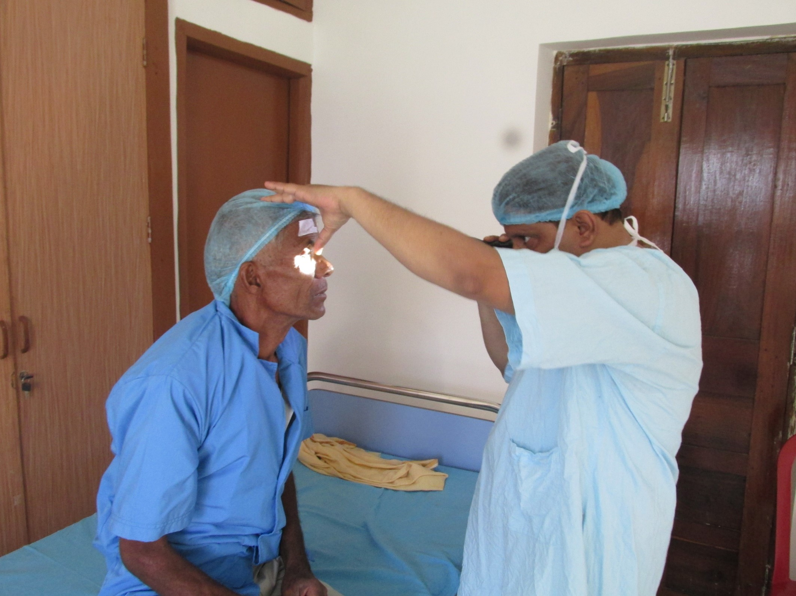
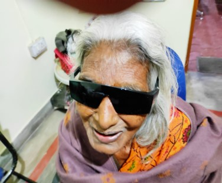
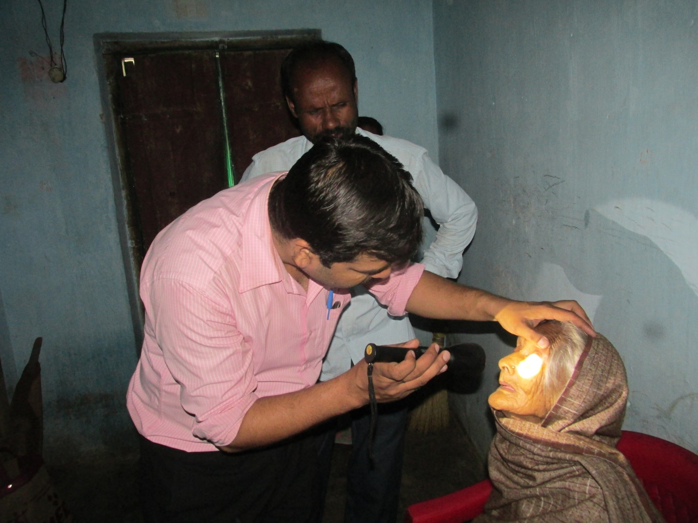

Rohini Devi Rotary Eye Hospital
The Eye Hospital is dedicated to providing affordable, high-quality eye care for all. Established by Col. Binay Kumar (Retd), it combines expert medical care with community outreach programs to prevent blindness and promote eye health in underserved areas.

Our Services
- Comprehensive Eye Exams: Regular checkups for early detection of vision problems.
- Cataract & Surgery: Affordable cataract removal and post-operative care.
- Laser & Optical Services: State-of-the-art laser treatment and corrective lenses.
- Community Outreach: Free eye camps, awareness programs, and rural screenings.
- Training & Education: Workshops for students, nurses, and local health workers.
Patient Testimonials

"Thanks to the hospital, I can see clearly again. The staff is compassionate and professional."
- Rajesh Kumar
"The free eye camp in our village helped me detect a cataract early. Truly life-changing."
- Sunita Devi


Visit or Support Us
We welcome patients, volunteers, and collaborators to join us in our mission. Schedule a visit, attend a workshop, or contribute to our community programs.